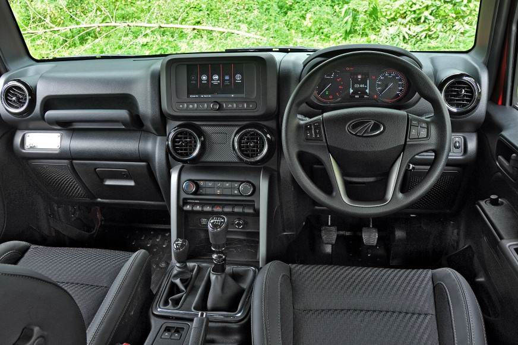
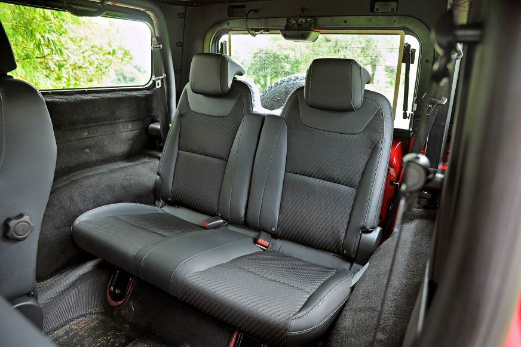
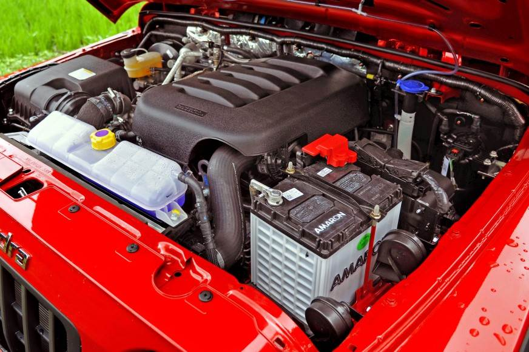

Mahindra Thar 4x4
Introduction
The 1st-gen Thar was rather controversial. Those used to old Jeeps & Gypsys appreciated the fact that it was more liveable, but there is no doubt that it was a crude hack-job full of many jugaads. The only real competition it had was the vintage Maruti Gypsy, which didn't offer a diesel engine, power steering or decent ride quality, so the 1st-gen Thar did okay. Mahindra realised the potential of a Jeep like the Thar and has gone all out with this 2nd-gen machine. It is significantly more modern, better equipped, well-finished and even comes with Automatics to expand its appeal!
The Thar is available in 2 trim levels - AX (Adventure Series) and LX (Lifestyle Series) with 4 variants - AX Standard, AX, AX (Opt) and LX. You can choose from three different types of roofs – a fixed soft-top, an innovative convertible soft-top and a hard-top. It is also available in 4 and 6-seater configurations. The Thar is still not at par with similarly priced cars and crossovers in many departments. Who then will be impressed with the Thar? Anyone who compares it to the earlier Thar, or old Jeep & Gypsy owners. Who will be disappointed with the Thar? Anyone who cross-shops it with same-price C2 segment sedans like the City / Verna or crossovers like the Creta / Seltos.
That said, there isn't a doubt that this 2020 Thar is a lot easier to live with than the earlier car. It will greatly expand the Thar's appeal & market. The Jeep is not for everyone though. PLEASE test-drive it for a long duration before cutting a cheque. PLEASE test-drive multiple times, with your family too. You don't want to end up like so many Harley-Davidson owners who are selling their bikes within 1 - 3 years at big depreciation losses.
Design & Styling
Full marks here - the Thar is an absolute head-turner that screams style. It retains the classic, heritage styling of Jeeps of the past and is, in fact, a xerox copy of the Jeep Wrangler! Despite its sub-4 meter length, the Thar oozes character and grabs the attention of other road users easily. Cab drivers, bike riders, pedestrians, old, young – it does not matter, this is one car that makes everybody smile. Other cars don't mess with you at junctions, and give way when they see the Thar approaching in their mirrors. Interesting colours (e.g. red), a well-designed hard-top, 18" rims and goodies such as LED DRLs / tail-lamps make it even more attractive. The sole complaint we have is with the design of that radiator grille. Thankfully, it can be swapped for a 7-slot Jeep-style unit in the after-market easily. We appreciate how chrome is minimal on the Thar.
Build Quality, Fit & Finish
The Thar has a sturdy body-on-frame construction and is built on Mahindra's Gen3 platform that also underpins the Scorpio. Its build quality is tough & can withstand offroading abuse. When you're driving it in the city, you sure feel like you're driving a “tank”! The bonnet, doors & tail-gate have a good deal of weight to them, and there’s not much flex in the body panels. The doors shut with a good, solid sound (especially when compared to the 1st-gen Thar), but need to be pushed firmly to close. While the paint quality is acceptable, panel gaps & the likes cannot be compared to same-price cars like the Creta. Still, overall fit & finish are very acceptable and lightyears ahead of the outgoing Thar. Mahindra hasn't shared the kerb weight; companies usually don't do that when the vehicle is excessively heavy!
Wheels & Tyres
The LX variant gets smart 18” gun-metal alloy wheels with 255/65 Ceat tyres which look big & fat! On the other hand, the AX Standard, AX and AX (Opt) variants come with 16” rims and 245/75 section rubber. Some offroaders prefer their rides to have smaller wheels and taller tyres like this Thar. This kind of a swap will also improve the ride quality due to the 30 mm taller sidewall height.
Ground Clearance
The Thar LX has an unladen ground clearance rating of 226 mm, while the AX gets 219 mm GC. Forget on-road bumps & speed-breakers, the Thar will climb mountains. And I mean that literally.
Standard & Extended Warranty
The Thar comes with a standard warranty of 3 years / 1 lakh km. Extended warranty is available upto the 5th year. We strongly recommend this warranty extension as brand-new Mahindra cars are known to suffer niggles & issues. We faced 2 in our test cars, while this post points to many more.
Maintenance
The 1st service is at 1,000 km (basically a checkup). Post that, the service interval is 10,000 km.
Safety
The Thar is equipped with safety features such as 3-point seatbelts even for rear occupants, a very solid roll cage, airbags (but just 2), ESP with rollover mitigation (pat on the back to Mahindra ), ABS, hill-hold, hill descent control, ISOFIX child seat mounts, TPMS (very useful on-road & offroad) and rear parking sensors. Sadly, because the rearward visibility is pathetic, a reversing camera is sorely missed (available as an official accessory though). The AX variants further gets 'snow chain provision' for tyres! While there is no NCAP rating for now, Mahindra claims that the Thar meets global crash test safety norms. We'll believe it when we see its GNCAP rating.
Interior
Cabin Design & Quality
You will be pleasantly surprised once you "climb" into this Jeep. We like the cabin’s design; it’s far more modern and SUV-like compared to the old Thar's rural-taxi nature. Nothing flashy or curvy in here, but the interior is very functional & likeable. The all-black theme does make things a little "dark", as does the limited greenhouse, but the black interior will conceal any signs of soiling way better than a lighter theme (offroaders will love this). There are some stylish elements too, like the aircraft style switches & indicators on the center fascia. There are hard plastics used everywhere, yet part quality is acceptable & the cabin does feel very durable. There are a few rough edges, but they are not too prominent or visible (unlike the old Thar which was a disaster…this new one is lightyears ahead). In the hardtop, you will find many exposed bolts which are used to attach the top to the body. Some folk will dislike this, but GTO thought it added character.
Space & Comfort
The Thar's floor is a long way off the ground and one needs to properly climb into the cabin. It's not senior-citizen friendly. There is enough space in the front. Cabin width is healthy and headroom is abundant. The driver’s seat is good overall & slides back sufficiently even for 6+ footers to feel comfortable. We used the lumbar adjustment and found back support to be perfect, as is the lateral support. While short to average-height drivers will be fine with the under-thigh support, taller occupants (even me @ 5’10”) will find it to be less. I felt that the seatbase doesn’t extend out long enough to support my thigh. The passenger seat too gets lumbar adjustment - your spouse will be pleased. The fabric upholstery is of average quality & the seats are firm enough to be supportive over longer drives. I wish Mahindra had given armrests bolted onto the front seats, like in the Scorpio. Would be super useful in the ATs. On the right side, the top of the doorpad is thick enough to be an armrest. You can easily rest your right arm there while driving.
The 2-door Problem
The fact that the Thar has 2-doors and ingress to the rear seat is impossible for the elderly makes it an impractical choice. Rear seat comfort is compromised (bumpy ride quality too) & the boot is tiny. This 2-door Thar will appeal to a small market, after the initial euphoria dies down. While enthusiasts will love the 2-door style, the regular Anand won't. In hardly any Indian home will the Thar be the primary car; in most cases, it will be the 2nd or 3rd ride of the house. We have a confirmation that the 4-door Thar is coming, but it might be a long wait.
Driving Position & Ergonomics
Ergonomically, we found the Thar to be user-friendly. The steering has thumb contours and is good to hold. The hornpad is a stretch for your thumbs, but it isn't hard to press. The horn itself is a nice, dual-tone unit. On the flip side, it is way too loud on the inside!! The steering wheel is adjustable for height, but it doesn't get reach adjustment. The instrument cluster is clear and easy to read - we'd still like it a size bigger. Coming to frontal visibility, you sit tall and have a lovely, commanding view of the road ahead (you can even see the bonnet). Short drivers will feel that the dash is on the higher side. Rearward visibility is absolutely pathetic. Even the side-rear view (area above the rear wheels) has major blind spots. The useless IRVM is too small, although the ORVMs are okay. They are tall & very Jeep-like (again a Wrangler copy). Another complaint we have is that the driver footwell is narrow, a dead pedal is missing and there is a prominent protrusion from the center fascia. This plastic bit protrudes into the footwell and will rub against your left shin area / knee. Not much of an issue in the AT as you can adjust the resting spot of your left leg, but it might be bothersome in the MT. Because the footwell is too narrow, in the MT, you'll have no proper place to rest your left foot on long journeys.
Cabin Storage
The Thar does alright in terms of cabin storage. There is a spot to park your smartphone at the base of the center fascia & practical cupholders on the center console for holding your coffee mug (a must for highway runs IMHO). The door pockets can hold a 1L bottle and other small items. On the flipside, the lockable glovebox is laughably small. It doesn't have a cooling vent or illumination either. Coming to the rear, both front seats have seatback pockets and there is a foldable bag hook on the left seatback. Additionally, there is some space underneath the rear seats where one can keep slim items, such as a laptop bag.
Air-Conditioning
The Thar gets an old-school HVAC unit (no climate control). The air-conditioner will chill you to the bone! The air-con’s power is more than enough for this limited-length cabin. Blower level 1 itself is powerful (more powerful than it ought to be IMHO). We didn’t find the need to engage blower level 2 at all, not even when it was hot & sunny outside. Besides, at level 2 and above, the blower gets noisy. No rear air vents for the two on the backseat.
Features
Unique & Noteworthy Features
The new Thar comes with most of the necessary features (including a touchscreen head-unit with Android Auto), but nothing over the top like wireless charging. Some features that stand out are the convertible soft-top (truly unique), washable floor with drain plugs, removable front doors, cruise control, drizzle-proof ICE & some controls, altimeter, compass, roll & pitch meter and Blue Sense App. You can also receive notifications about Mahindra Adventure events!
Rear Passengers
Rear Seat Comfort & Space
As mentioned earlier, ingress & egress into the rear are only for the fit & healthy. It is impossible for senior citizens. Besides, you have to climb in and keep your back bent to prevent your head from hitting the roof. The seat is well-sized for 2 (not 3, mind you) and there is enough head + knee room. It has a comfortable backrest angle that's adjustable & the headrests are adjustable too. Rear passengers will sit close to each other, while taller ones might find the under-thigh support to be less. There is enough space under the front seats to slide your feet into, but the rear seats aren't located exactly behind the front ones. This means one of your feet can be slid under the front seat, and the other one will be toward the center, making things awkward. There are no rear windows in the hard-top, just fixed glasses on the sides. On the convertible though, the side windows can be easily removed, in case you want to enjoy the fresh air.
Boot Space
If you laughed at the tiny glovebox, you'll be laughing harder after seeing the boot. Luggage space is sad, comparable to a small hatchback. For driving holidays, the Thar is best for 2 – 3 onboard and their luggage. You can forget about going for a road-trip if you have 4 occupants because their bags simply won’t fit! You’ll either have to do some jugaad by squeezing smaller bags on the sides of the rear seat (on the wheel arches) or hope for someone to design a carrier / temporary storage net hanging out from the back (like the old hunting Jeeps). Yes, the rear seat’s backrests split in a 50:50 ratio and fold down for when you need to haul larger cargo. We're left scratching our heads as to why Mahindra couldn't make the Thar just a wee bit longer to give it a useable boot.
Driving the Thar 2.2L Turbo-Petrol AT
Ride Comfort
The Thar comes with an independent double wishbone suspension at the front and a multilink suspension with coil-over dampers and stabiliser bar at the rear. This is a body-on-frame offroader with a short wheelbase. You know what's coming, right? Ride quality is sad, whether in the city or on the highway. It is liveable though. If you have driven Jeeps, Gypsys, Scorpios or even the 1st-gen Fortuner before, you should be okay. For those used to contemporary hatchbacks, sedans & crossovers, this bumpy ride will be the biggest deal breaker. You feel each & everything on the road – literally! Even on a clean expressway, the Thar is continuously pitching and moving up & down. Big bumps come in strong. And if you drive slowly on broken roads, you can expect a lot of side-to-side swaying. The single time that the Thar is settled & flat is when it’s standing in one place .
It’s not just the suspension, but you feel the unevenness of the road through the steering also. The steering is constantly moving & shaking on bad roads. This excessive feedback will turn off many.
It must be noted that the LX variant we tested was equipped with 255/65 R18 tyres. Lower variants with their 245/75 R16 section rubber should be a little softer.
Handling & Dynamics
The Thar is awesome to drive in the city. It's so easy & effortless that the fairer sex will take to it as well. On the highway though, the Thar's behaviour is poor. For the sake of your safety – and that of your passengers – this is not a vehicle that you drive hard at speed. The Thar is a tall offroader, NOT a corner-carving machine. While I found the grip levels from the fat 255 mm tyres to be satisfactory, you must take corners cautiously. The height & weight are felt. Just to put things in perspective, a fast sweeping expressway curve that I would take in the Duster AWD at 120 km/h, I’ll take in the Thar at 80 km/h as an expert driver (70 km/h for a layman driver).
This is not a vehicle we would do a Mumbai - Goa run in; the steering is constantly giving feedback, the suspension is busy, there is a lot of wind noise etc. The Thar can get tiring on those super long journeys. We’d be alright with a 5 hour Mumbai – Mahabaleshwar drive, but that's our upper limit.
Steering
The Thar's hydraulic power steering is user-friendly. While not one-finger light like some EPS units, we have no complaints. It is nice in the city with a decent amount of weight to it. On the highway, at times, its reaction time can be slow, but we actually prefer it this way in a Jeep that is a poor handler (sharp steerings are best suited to low slung, tight handling cars). At high speeds, the steering does get vague. But again, we’d rather have vague than sensitive in a tall 4x4.
Braking
All variants of the Thar come with 303 mm disc brakes at the front and 282 mm drums at the rear. ABS + EBD and Brake Assist are standard. The stopping power is adequate, even for those highway runs. That said, the brake pedal sure feels spongy and like most body-on-frame UVs, the Thar nosedives under braking.
4x4 & Offroading
This shall be covered in a separate, dedicated thread. We are going to spend a full day offroading with the Thar, understanding it & analysing the offroad capability. From what we hear, it's damn capable in stock form itself. Offroading goodies include a rear locking diff, brake-locking diff & water-wading rating of 650 mm.
Niggles & Problems
We faced 2. In one instance, GTO unlocked the car, started it and the anti-theft alarm went off! Another time, it went off after switching the motor off. Then, in the petrol AT, the smartphone was continuously disconnecting from the system while running Android Auto (the cable & phone are both okay). Another reviewer & BHPian saw warnings light up like a Christmas tree. Lastly, a dealer Thar ended up with a starter issue.